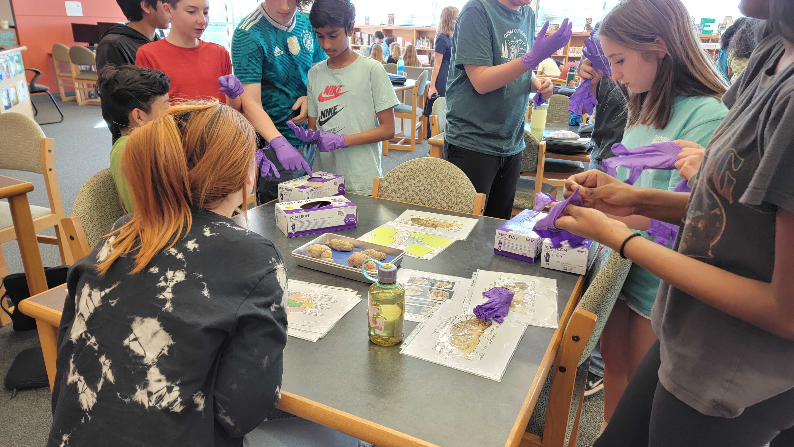
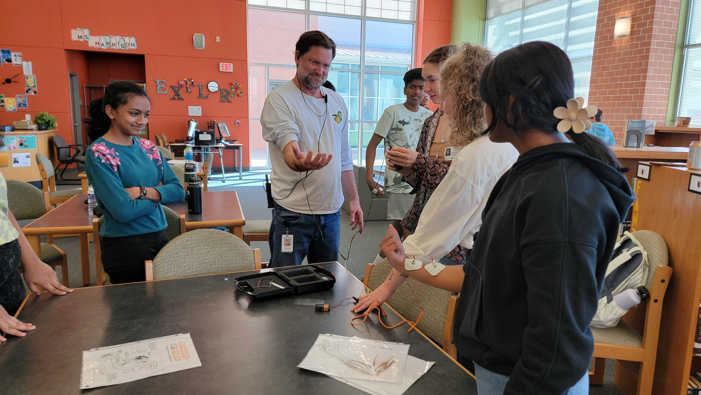
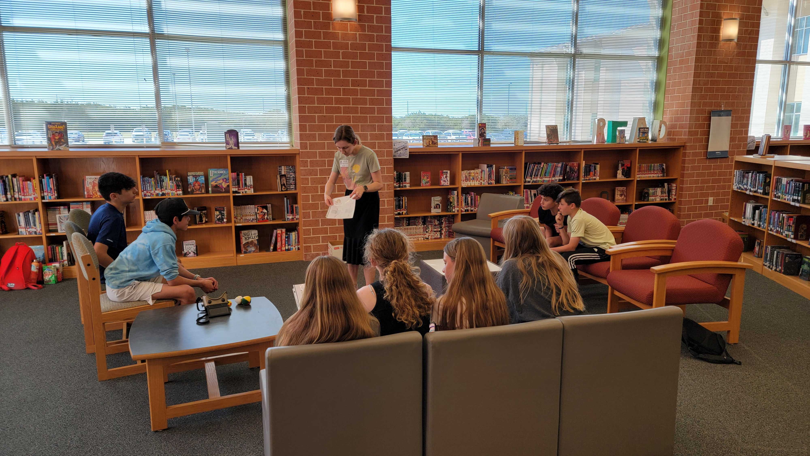

Neuroscience is an interdisciplinary field that focuses on studying the structure and function of the brain. The
brain harbors an immense number of mysteries that we still do not yet understand such as: What causes neurological
issues such as Epilepsy or Alzheimer’s? How does the brain process information about the environment? What is
consciousness? These questions have inspired people from a variety fields of study, such as biology, physics,
psychology,
computer science, engineering, and mathematics, to come together in the attempt to understand how the brain works.
Our Mission
We want to bring Neuroscience to you! The brain is something we all have and we should all become a little bit more
familiar with it. That is where we come in. Here at the University of Texas at Austin we have a committed and
dedicated group of graduate students from within the Institute of Neuroscience that aim to share their knowledge
about the brain with everyone. These are students who have extensively studied the brain, as well
are currently
doing their own research! We offer a free program called NeuReach that is open to all schools, for all ages, where
we bring in hands-on Neuroscience demonstrations that aim to both educate as well as inspire students to pursue STEM
work.

Brain Anatomy

Electrical Activity of Nerves

Visual Adaptation
What we offer
Neuroscience Demonstrations:
This is a test
"The Scientific Process":
This is a test
"Tips and Tricks for Becoming a Scientest":
This is a test
"Some Title For Talking About Computational Neuro":
This is a test
Contact Info
If you are interested in having a group of UT Austin Neuroscientist qcome visit your school, please feel free to
reach out to us. You can email me at lbecker95@utexas.edu. Thank you and remember to Discover More about the world
you live in.